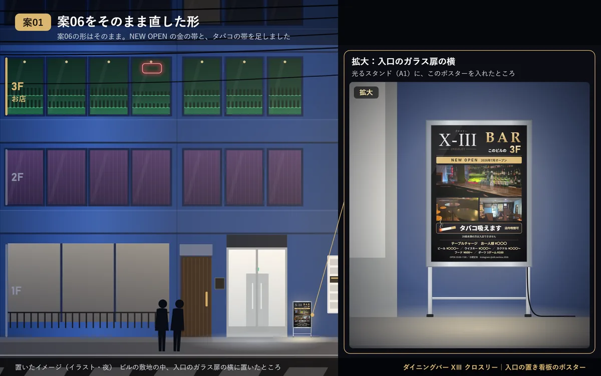
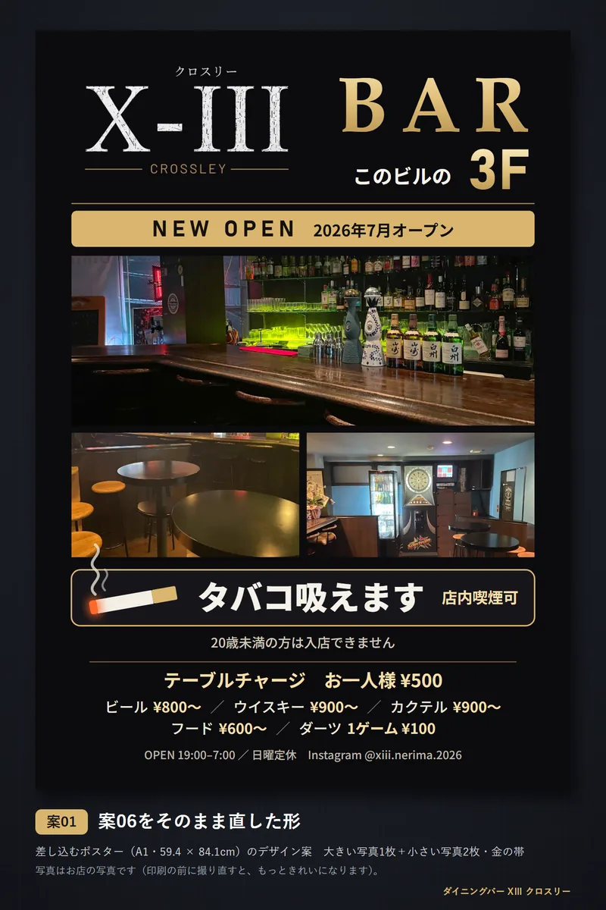

案06をそのまま直した形
大きい写真1枚＋小さい写真2枚・金の帯
案06の形はそのまま。NEW OPEN の金の帯と、タバコの帯を足しました




選んでいただいた案06の並びはそのままに、ご意見を入れた形です。ロゴと BAR・3F の下に「NEW OPEN 2026年7月オープン」の金の帯、写真の下に「タバコ吸えます」の帯を置きました。焼酎・テキーラと、写真の上の説明は外しています。
よいところ
- 案06の雰囲気が、いちばんそのまま残る
- 金の帯で NEW OPEN がはっきり見える
- 上から順に読めて、わかりやすい
気をつけるところ
- タバコの帯は写真の下なので、遠くからはロゴと写真が先に目に入る
- NEW OPEN3段階中2
- タバコ3段階中2
- 雰囲気3段階中3
- 色・作り
- 大きい写真1枚＋小さい写真2枚・金の帯
- 使う写真
- カウンターと酒棚・テーブル席・ダーツ
- 大きさ・紙
- A1（59.4 × 84.1cm）・電飾フィルム